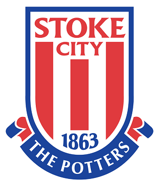
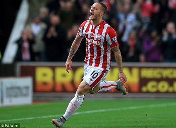
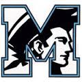

When I was a little I did not like soccer. I played it at the YMCA and did not like it. It was not until my dad moved our family to England that I was probably peer preasured into playing everyday, and eventually I got better and developed a love for the game. I lived in England for almost 4 years and in my 2nd year I even made the school team. At first I played as a goalkeeper becaus being the American kid I played the position where I used my hands most of the time.
when I moved back to America I was suprised how many Americans actually played soccer. I started playing at CESA rec which was pretty bad but I didn't know any better so yeah. While playing for Cesa I realized that I did not want to play goalkeeper anymore so I switched to playing midfield and right wing. I started playing for the middle school team Beck Academy where we went on a undefeated run to win the district championship. I played with them for another year and that next season we didn't do very well. and didn't even go to the playoffs.
Last year I played on my club team where I played right wing for most of the year and scored 18 goals which is the most goals I have ever scored in a season. We still did not do that well thay season and only winning a handful of games. But we still managed to go to state cup in colombia and we picked up some greast momentum and ebded up winning every game in the tournament and winning state cup while scoring in every game in the of the tournament which was a good achievement for me and it helped the team a lot. For high school I made the JV soccer team which we did ok while I played Central Midfield. I am still playing for FUrman United and I made a better team and we just started our season.
My favorite soccer team is Stoke City FC. They play in the Barclays Premier League. They are located in Stoke-on-Trent in England. Thats they place I lived when I lived in England. Sometimes I get made fun of by my teammates, but they all support the big clubs but I have a personal experiece with the club instead of supporting the team that wins the most or spends the most money. My favorite player on Stoke City is Marko Arnauntovic, he is from Austria and he was the top goalscorer us last season with 11 goals. I like him because he is kind of crazy but he also has a good reputaion by winning the Champions League which is the biggest award a team can win. He bleached his hair then put it in a manbun. I also like watching him because he does lots of skills and tricks to get past defenders. Stoke also have other great players like Bojan Krkic, Xherdan Shaqiri, Joe Allen, Wilfried Bony Gianelli Imbula, Jack Butland, but the list can go on and on.
  I play for Furman United.
I watch the Premier League.